Real console, mocked API, Phosphor dark. Desktop 1300 px and phone 393 px. Repository page: the Unsaved changes (2) bar, the Changed marks, and the Discard changes? question. Settings, Console: 32 px between sections. Machine page: the Pool size section, the three choices, the live check line (fits, leaves little, too much), one Save.
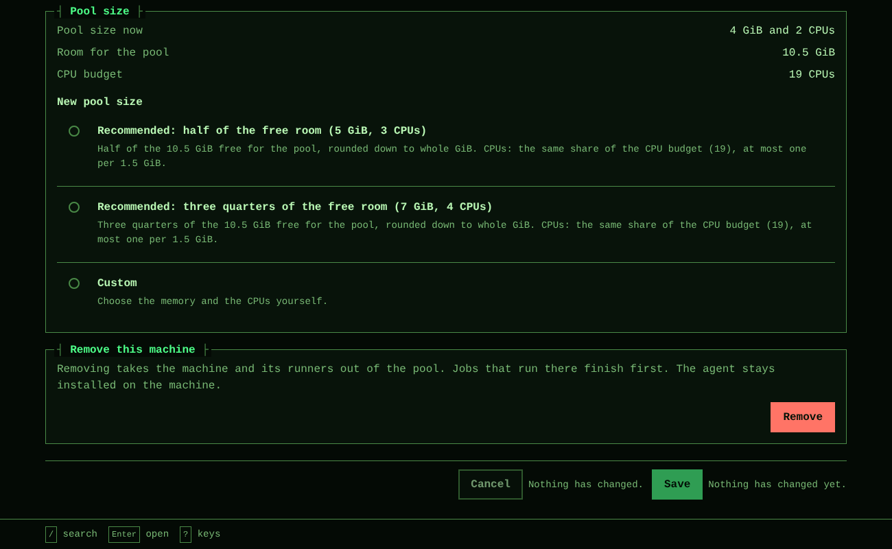
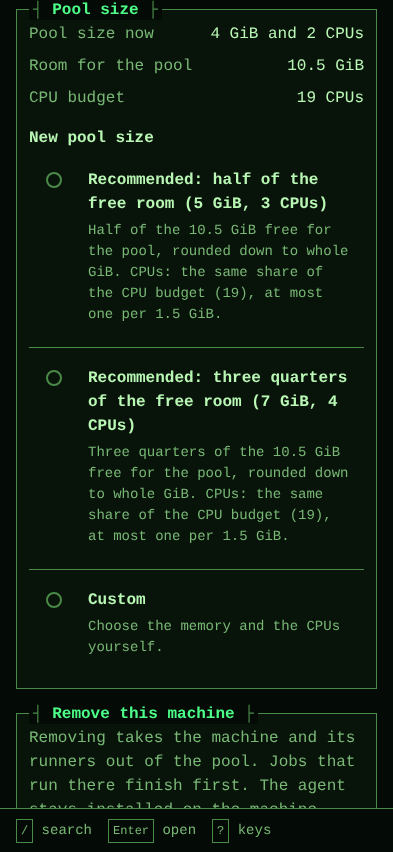
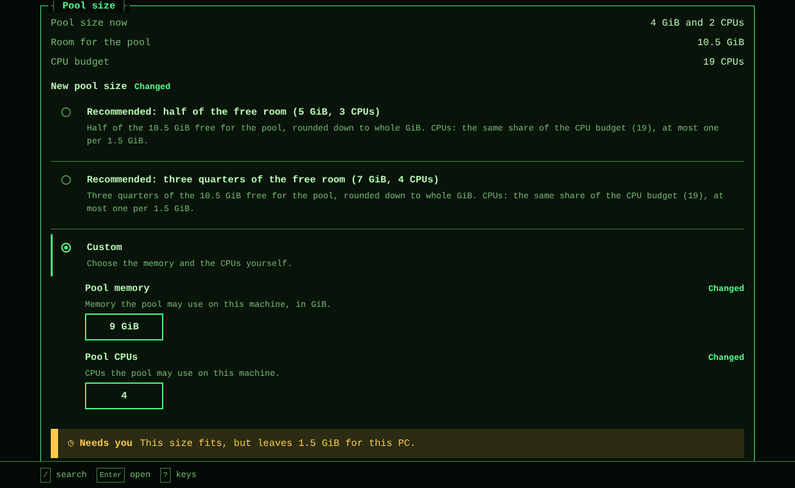
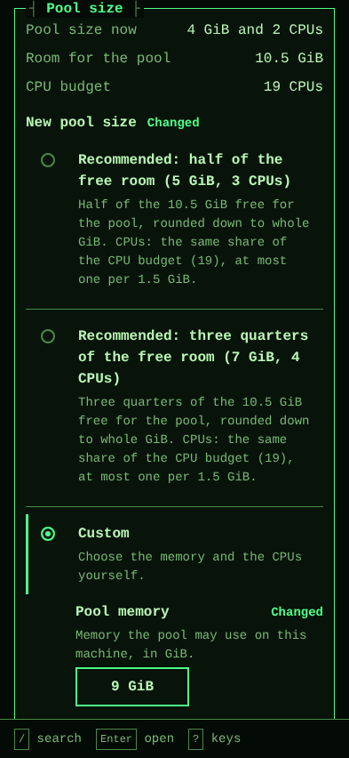
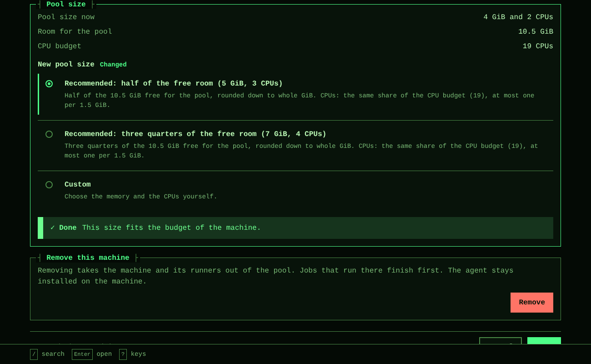
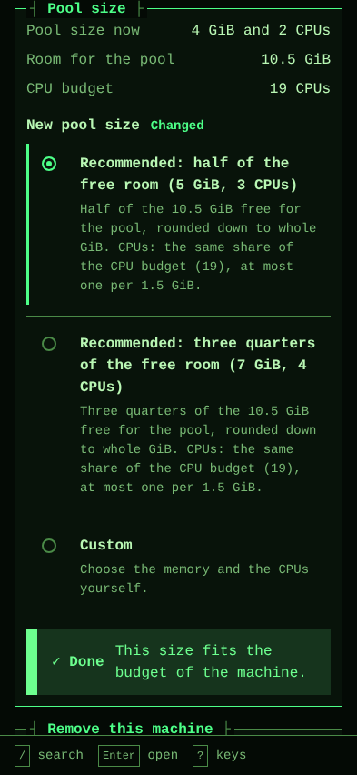
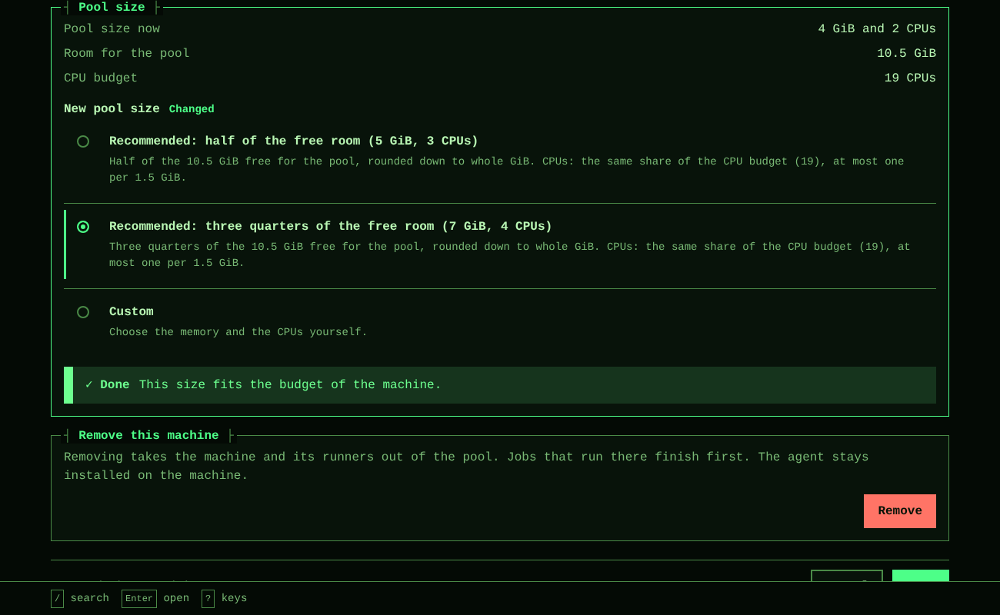
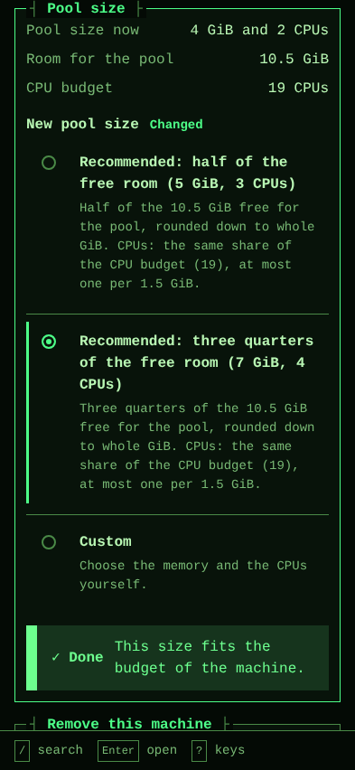
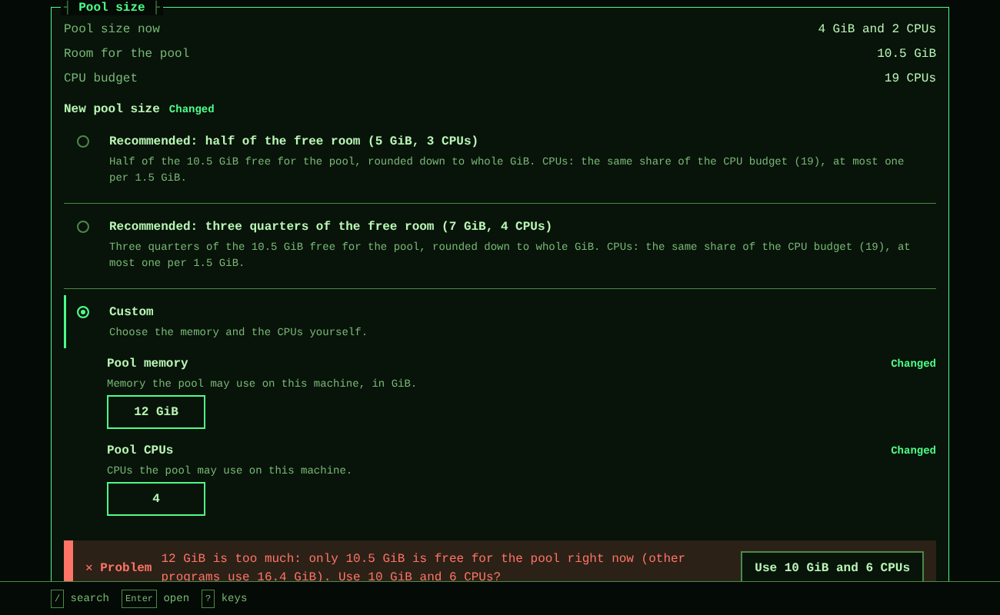
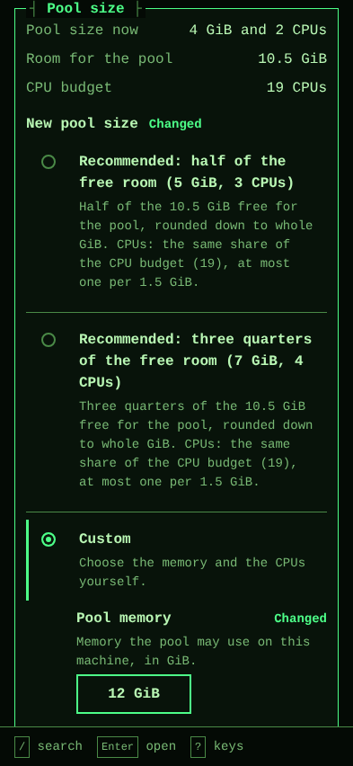
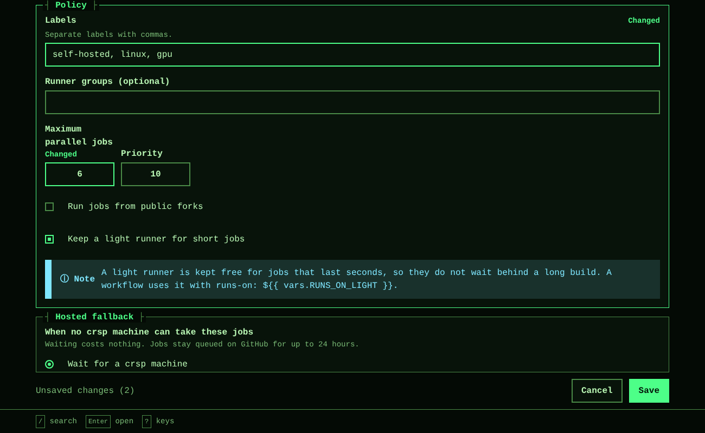
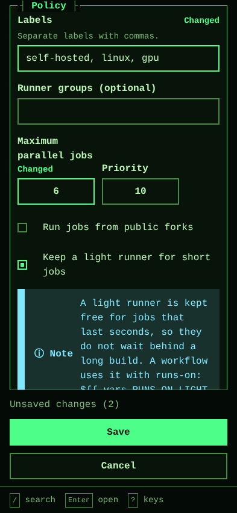
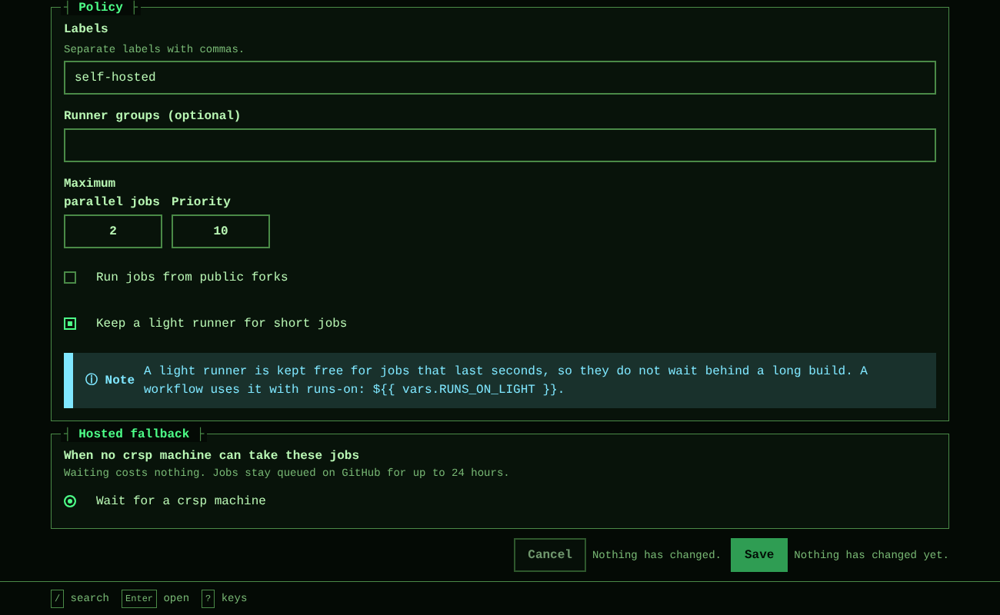
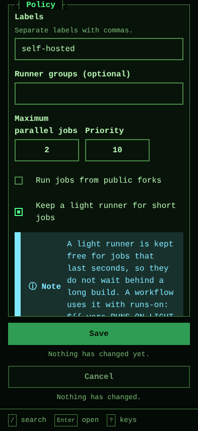
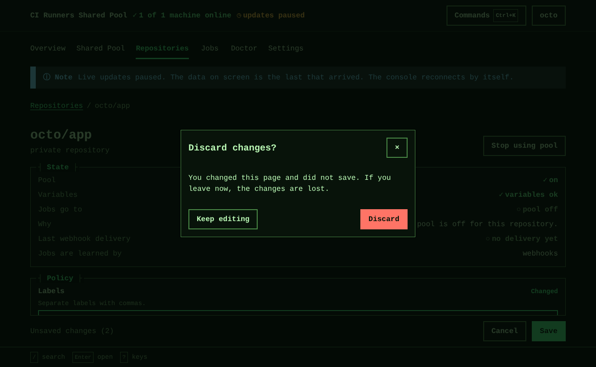
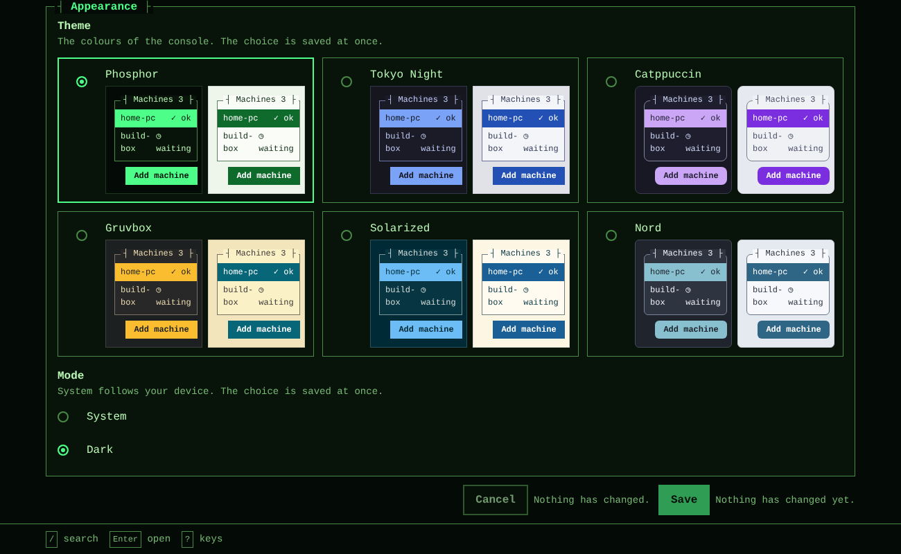
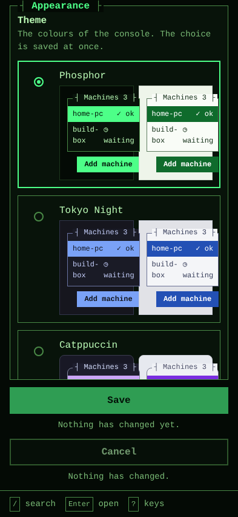